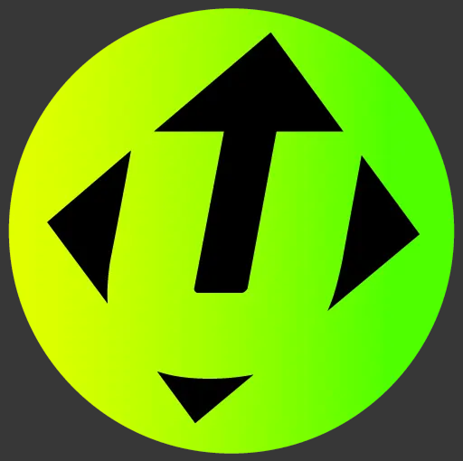

My Gallery
Here are some of my favorite moments captured in photos.
Professional and Academic Journey
-
⭐️
B.Des at NIFT
My journey in design started from NIFT Bengaluru where I studied B.Des in product Design and Specialized in Jewelry Design
However, a certain un-fulfilment with work left me feeling empty inside.
This is where I tried my first UX Project for a class during Covid, and I fell in love with the process. It felt so useful and scientific
-
⭐️
BYJU'S
I decided to pursue my graduation project which was an internship for 6 months at BYJU’S in their Xplore Games Vertical
I re-design low performing games, to increase engagement and competition rate for Math and Science Games.
I was also involved in a project for DisneyxBYJU’S to create an augmented reality game using OSMO vision technology to increase engagement of educational videos
-
⭐️

Gameberry Labs
After graduation, I pursued a full time role at Gameberry labs as a Product Designer, and the Product was a game:Ludo Star
I was responsible for designing features for engagement and monetization, as well as maintaining live operations of the game.
Additionally as part of my responsibilities, I maintained documentation of features and assets for clear and easy communication
-
⭐️
Jetapult
I pursued a short stint at Jetapult, a VC for games and I was responsible for reviving 3 dying and under performing games.
In this role I gained understanding of alot of metric fundamentals and how data can be leveraged to drive design decisions
-
⭐️
University of Michigan
While I learnt alot at the job, I decided to a step up and pursue my masters in Human Computer Interaction at the University of Michigan, School of Information
-
⭐️

Zephyr
As a part of Atlas Digital Consulting Group, I had the honor to work on Zephyr, an AI sports analytics tool where Me along with another designer helped Optimize their filteration system as well as designed a new custom video editing feature.
Things I Love
Painting
Exploring colors is therapeutic.
Dancing
Helps me feel grounded and free.
Cooking
Experimenting with flavors is fun!
Gaming
Designing & playing games brings joy.